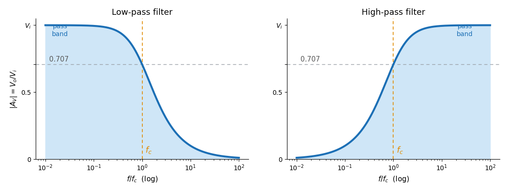
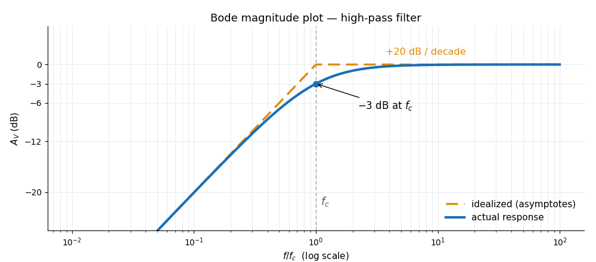

Transfer Functions, Filters & Bode Plots Lecture 9
How does a circuit treat one frequency versus another? The answer is the transfer function H = Vo/Vi. Expressed in decibels and sketched as a Bode plot, it explains every filter — low-pass, high-pass, band-pass and stop-band — with just a cut-off frequency and a couple of straight lines.
1 The Transfer Function H = Vo/Vi
A two-terminal network driven at one frequency produces an output that is a scaled, phase-shifted copy of the input. The transfer function captures both effects as one complex number — and for a simple R-C/R-L divider it is just the AC voltage-divider rule (Part 3) with impedances:
- |H| – magnitude (gain): how much the amplitude is scaled
- θ – phase: how much the output leads (+) or lags (−) the input
- both vary with frequency because ZL = jωL and ZC = 1/(jωC) do
Reference: Boylestad, Ch. 21–23 (Decibels, Filters, and Bode Plots).
2 Logarithms — the Tool
Frequency responses span huge ranges, so we plot them on logarithmic axes. A logarithm answers "to what power must the base be raised?":
- base 10 → common log; base e = 2.718 → natural log (ln x ≈ 2.3 log₁₀ x)
- log 1 = 0; the log of a number < 1 is negative
Property 3 (a product becomes a sum) is the reason cascaded stages simply add their gains in dB.
Reference: Boylestad, Ch. 21.2.
3 Decibels: Power, Voltage & dBm
The bel compares two power levels logarithmically; the decibel (1 B = 10 dB) is the practical unit:
- the voltage form gains a factor of 20 because P ∝ V²
- +3 dB = double the power; +6 dB = double the voltage
| P₂/P₁ | dB (10 log) | V₂/V₁ | dB (20 log) |
|---|---|---|---|
| 2 | 3 dB | 2 | 6 dB |
| 10 | 10 dB | 10 | 20 dB |
| 100 | 20 dB | 100 | 40 dB |
| 1000 | 30 dB | 1000 | 60 dB |
For an absolute reference, dBm compares to 1 mW (across 600 Ω): R_{dBm} = 10\log_{10}\dfrac{P}{1\,\text{mW}}.
Worked examples — voltage gain in dB
Input 5 mV, output 2 V:
A_{dB} = 20\log_{10}\frac{2000\,\text{mV}}{5\,\text{mV}} = 20\log_{10}400 \approx 52\,\text{dB}
A system with 46 dB gain and an 8.5 V output:
V_{in} = \frac{V_o}{10^{\,A_{dB}/20}} = \frac{8.5\,\text{V}}{10^{2.3}} = \frac{8.5}{200} = 42.5\,\text{mV}
Reference: Boylestad, Ch. 21.3–21.5.
4 The Low-Pass Filter
A filter is any R/L/C (passive) or op-amp (active) combination that selects or rejects a band of frequencies. Anything in the pass-band reaches the output with at least 70.7 % of the maximum voltage.
A series R with the output taken across C is a low-pass filter: at low f, XC is huge and Vo ≈ Vi; at high f, XC → 0 and the output collapses:
- fc – cut-off (corner) frequency, where |AV| = 0.707 and R = XC
- at fc the output lags the input by 45°

Reference: Boylestad, Ch. 22.2.
5 The High-Pass Filter
Swap R and C (output across R) and the behaviour inverts: low frequencies are blocked (XC → ∞), high frequencies pass:
- same fc formula as the low-pass; below fc the output falls off
- at fc the output leads the input by 45°
- this is why the cut-off is universally called the −3 dB point (half-power)
Reference: Boylestad, Ch. 22.3.
6 Band-Pass & Stop-Band Filters
Combine the two single filters and you can pass — or reject — a band:
A resonant circuit (Part 4) is itself a band-pass filter, sharpest of all:
- high Q ⇒ narrow band ⇒ very selective (radio tuning)
Worked example — band-pass critical frequencies
High-pass stage R₁ = 1 kΩ, C₁ = 1.5 nF; low-pass stage R₂ = 40 kΩ, C₂ = 4 pF:
f_{c\_h} = \frac{1}{2\pi R_1 C_1} \approx 106\,\text{kHz},\qquad f_{c\_l} = \frac{1}{2\pi R_2 C_2} \approx 995\,\text{kHz}
The pass-band runs from ≈106 kHz to ≈995 kHz (high-pass corner below the low-pass corner).
Reference: Boylestad, Ch. 22.4–22.6.
7 Bode Plots
A Bode plot graphs gain (in dB) and phase against frequency on a log scale. Its magic: the real curve is closely approximated by straight-line asymptotes, so you can sketch a response from just the cut-off frequency.
- far from fc the response is a straight line; near it, it bends

- the slope is constant per octave/decade — that's why the segments are straight
- actual response is 3 dB off at fc, and ~1 dB off at fc/2 and 2fc
Reference: Boylestad, Ch. 23.